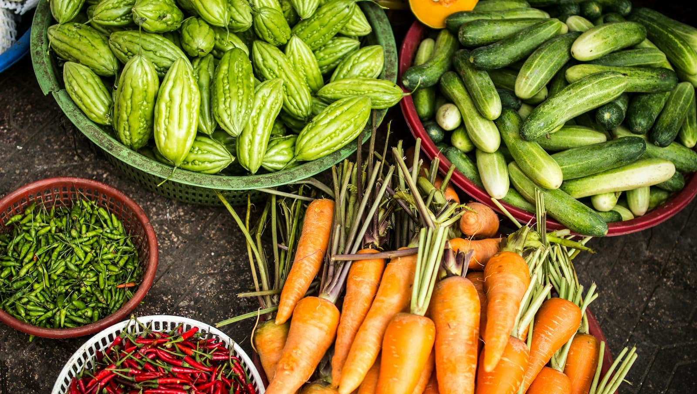
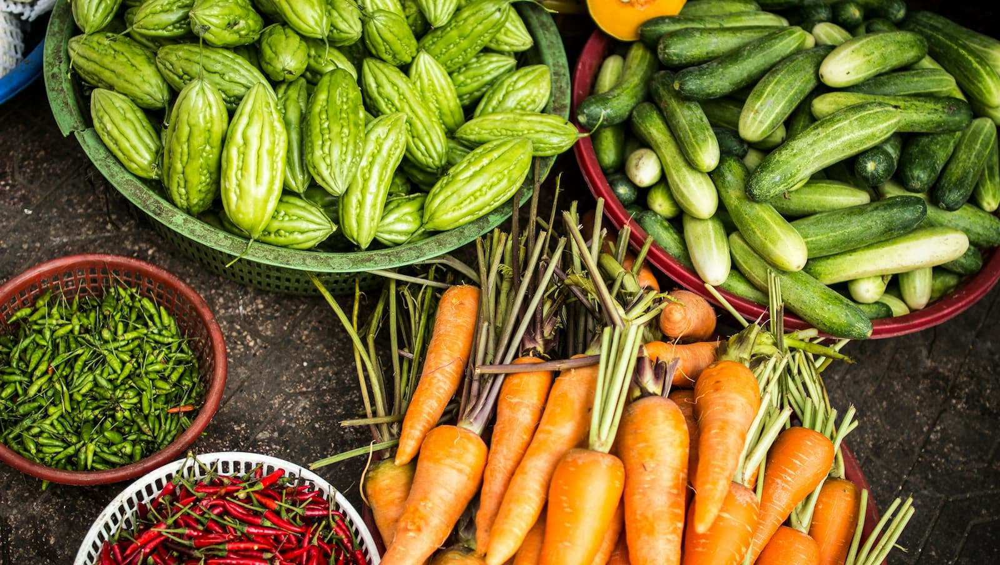

fresh from our farm to your table
Explore our seasonal harvest and discover the freshest fruits, vegetables, and local goodies grown with care right here on our farm. Whether you're looking for vibrant greens, crisp fruits, or specialty crops, we've got everything you need to create delicious, farm-to-table meals!
get in touch with us!our product selection
| Category | Item | Description | Price | Season Available |
|---|---|---|---|---|
| Veggies | ||||
| Zucchini | A tender, green summer squash | $1.50/ per lb ($3.31/ kg) | Summer | |
| Peppers | Sweet bells of various colours | $2.50/ pepper | Summer | |
| Eggplants | Classic purple globe eggplants | $3.50/ eggplant | Summer | |
| Tomatoes | Sweet, sun-ripened juicy heirlooms and Romas | $6.00/ kg ($2.72/ lb) and $4.00/ kg ($1.36/ lb) | Summer | |
| Cucumbers | Crisp, cool, classic green cucumbers | $3.00/ kg ($1.36/ lb) | Summer | |
| Squash | Winter varities: Butternut and Acorn | $4.00/ bushel | Fall | |
| Onions and Shallots | Sweet bells of various colours | $3.00/ kg ($1.36/ lb) | Fall and Winter | |
| Kale and Chard | Leafy greens | $2.50/ bunch | Fall and Winter | |
| Carrots | Fresh and crunchy vibrant orange and heirloom rainbow, bulk carrots | $3.00/ bunch | Spring and Fall | |
| String beans | Green and Blue Lake varieties available | $4.00/ kg/ ($1.81/ lb) | Spring and Fall | |
| Fruits | ||||
| Strawberries | Fresh, juicy strawberries | $5.00/ 500 g | Summer | |
| Blueberries | Fresh, sweet blueberries | $6.00/ 500 g | Summer | |
| Cherries | Ripe, juicy cherries | $8.00/ kg ($3.63/ lb) | Summer | |
| Apples | Fresh, sweet apples | $3.00/ kg ($1.36/ lb) | Summer and Fall | |
| Cantaloupe and Watermelons | Fresh, juicy melons | $4/ melon (for each) | Summer and Fall | |
| And Eggs | ||||
| Eggs | Fresh, non-gmo, pasture- raised eggs | $6/ dozen | Year round | |
Handmade and Homegrown
We offer a selection of fresh, farm-grown herbs, homemade bread and butter, and a variety of preserves made right here at the farm. These delicious products are available on select days throughout the week, and availability can vary based on harvest and production schedules.
Call ahead to find out exactly when these items will be available and to hear about the current selection of preserves we have in stock. Whether you're looking for fresh basil, a loaf of bread, or a jar of homemade jam, we're happy to reserve your items for pick-up!
Check out our Facebook page for accurate product availability and prices and to follow our farm!
Rooted In Sustainability: A Practice Close To Our Hearts
Although we’re not officially certified organic, we grow all of our produce using organic methods, focusing on soil health, natural pest control, and crop rotation to maintain a thriving, resilient farm. We believe in farming with respect to the land and work to ensure that what we grow is not only good for you, but also for the environment.
At Kehler Vegetable Company, we believe that great food starts with great farming. That’s why we take a hands-on approach, from carefully selecting the right crops to tending to them throughout the growing season. Whether it’s through composting our own manure or using innovative tools like flame weeders and row covers, we focus on practices that are gentle on the land and yield the best produce possible.
Thank you for supporting local agriculture! Your support makes the world of difference! If you have any questions or just want to learn more about our farm, we'd love to hear from you! get in touch with us!
 
